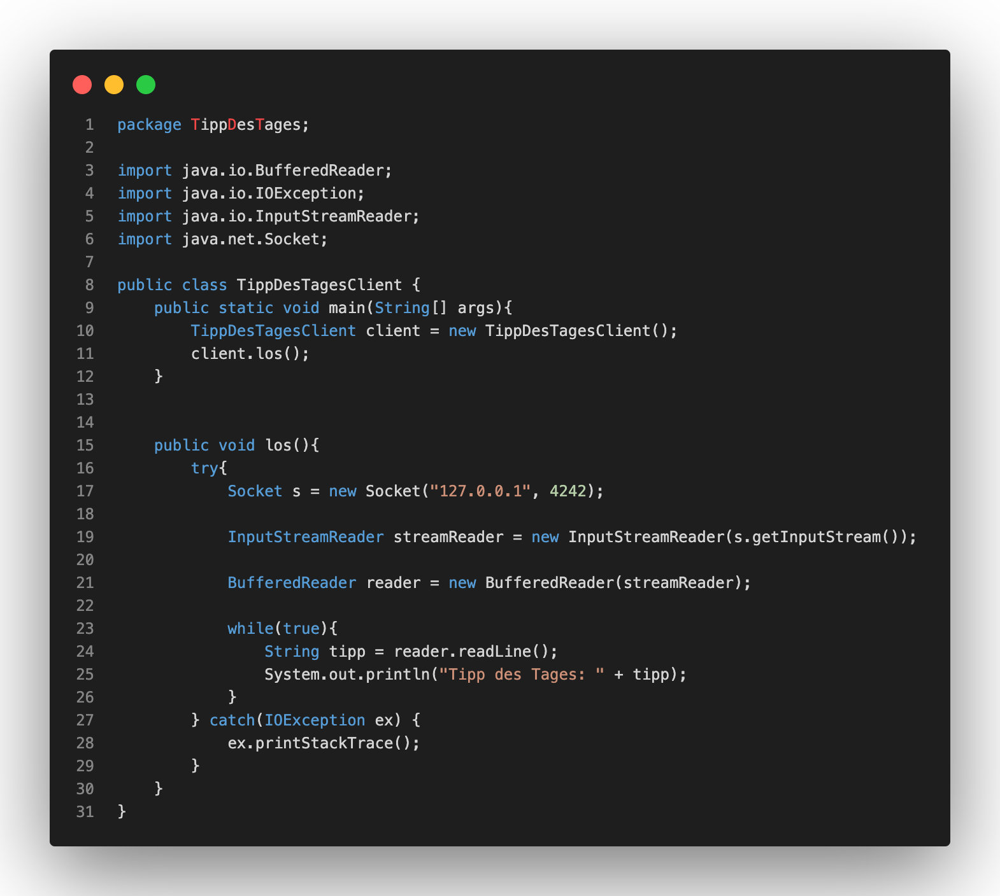
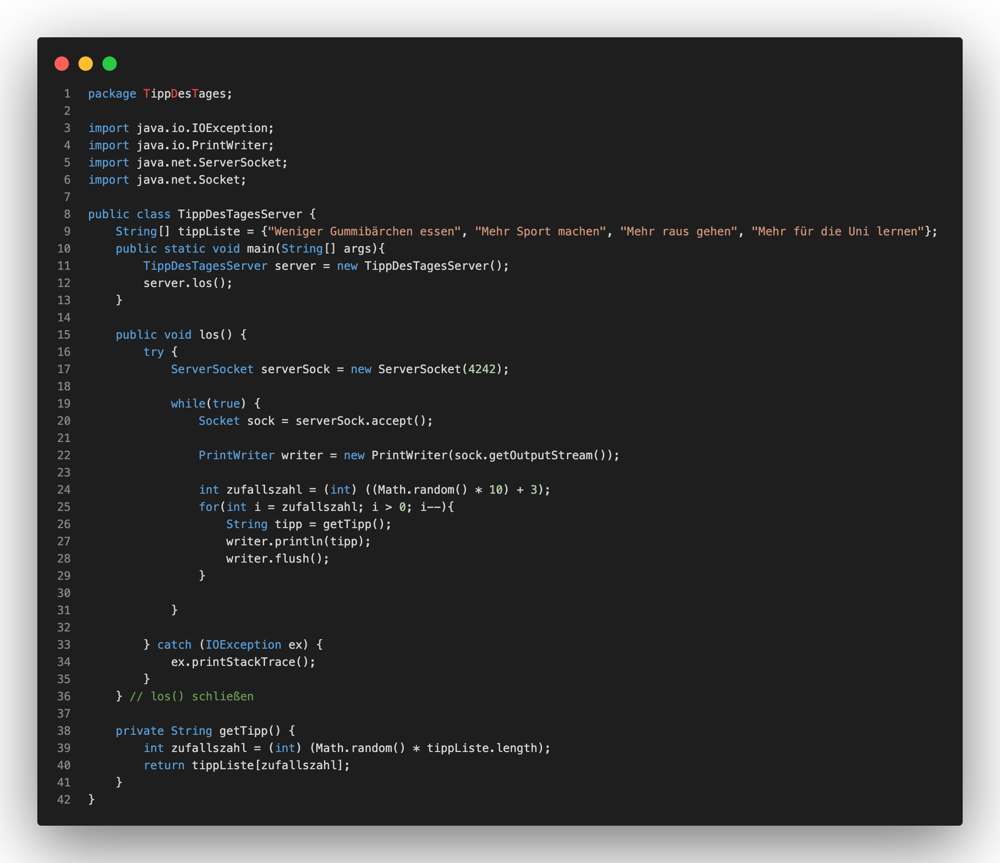

Netzwerkprogrammierung über Sockets
Client
1. Verbindung zum Server aufbauen
2. Nachricht an Server senden
3. Nachricht vom Server Empfangen & lesen
Übung 3
In der dritten Übung sollen wir die Kommunikation zwischen einem Client und einem Server programmieren. Die Klassen dazu heißen TippDesTagesClient und TippDesTagesServer. Die Quellcodes dazu sehen wie folgt aus:

Im Quellcode des Clients erzeugen wir in der Main Methode eine neue Client Instanz und starten die los()-Methode in dieser. Dort wird ein Socket erstellt, der den Port 4242 verwendet. Zudem werden ein InputStreamReader und BufferedReader erzeugt, die mit dem InputStream des Sockets (folgt) connected werden. Zusätzlich erzeugen wir eine endlose while-Schleife, dabei werden erhaltenen Nachrichten in der Konsole ausgegeben.

Zu dem Client benötigen wir das Gegenstück - den Server. Dabei erstellen wir analog zum Client in der Main Methode des Servers eine neue Instanz unseres Servers und starten ebenfalls die los()-Methode. Die los()-Methode erstellt einen neuen ServerSocket am Port 4242, der wie oben geschildert vom Client verwendet wird. Danach wechselt er in eine endlose while-Schleife, in der bei jeder Anfrage eines Clients dieser zunächst akzeptiert werden muss. Danach wird ein PrintWriter erstellt, dessen Output der OutputStream ist. Dabei wird eine zufällige Anzahl an Tipps des Tages versendet.
Wichtig ist bei der Ausführung darauf zu achten, dass der Server gestartet ist, damit der Client überhaupt die Möglichkeit erlangt eine Anfrage an den Port 4242 zu senden.